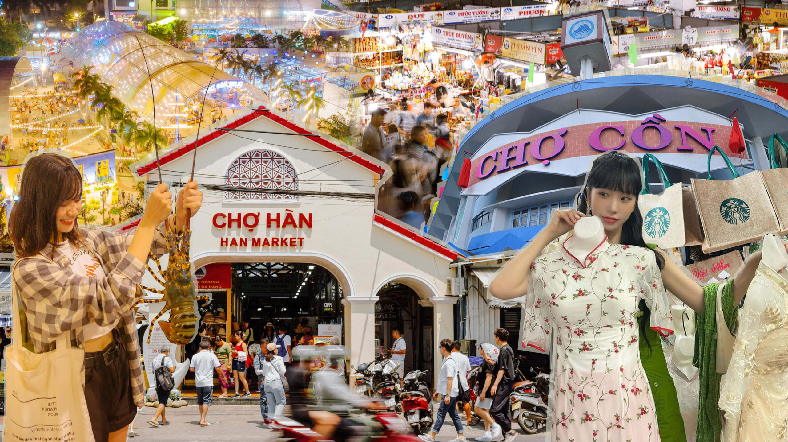
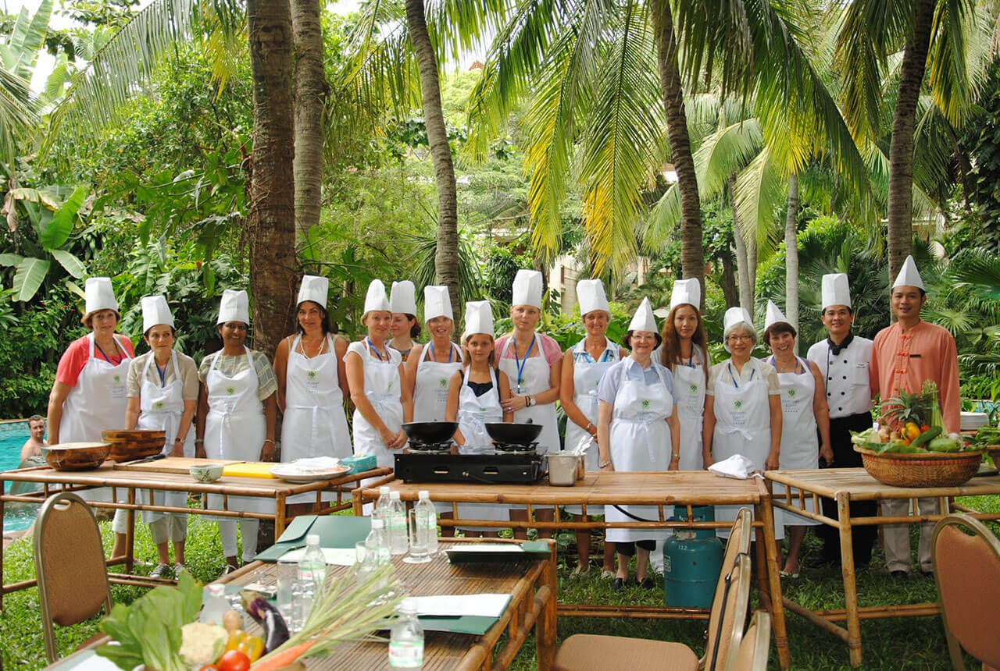

Danang Cuisine: Elevating Itself to a Must-Try Tourism Highlight
Da Nang, situated in the Central Highlands region, has emerged as a prominent tourism gateway owing to its rich cultural heritage of trade and cultural exchange. Da Nang’s culinary offerings reflect the intersection and convergence of regional culinary cultures from Vietnam and worldwide while preserving the unique characteristics of traditional local cuisine. In addition, Da Nang boasts abundant resources to provide diverse ingredients, thereby contributing to the distinct features of its regional cuisine.
The extensive coastline of Da Nang, with its pristine white sandy beaches, has become a popular tourist destination for visitors seeking to unwind and experience the local cuisine. However, locating a fresh, affordable, and varied range of seafood shops along the coastal route of Hoang Sa- Vo Nguyen Giap- Truong Sa Street can be daunting for the discerning visitor.

Da Nang offers visitors an impressive array of culinary options, ranging from high-end hotels and resorts to traditional and popular dining establishments. There is something for everyone, from breakfast to lunch to dinner and even late-night snacks. Huynh Thuc Khang breakfast street and Pham Hong Thai night food street are two renowned spots where visitors can savor a wide variety of typical dishes, including bún chả cá (fish ball noodles), Mỳ Quảng (Quang noodles), bún mắm (Vietnamese fermented fish noodles), bánh xèo (Vietnamese pancakes), nem lụi (Vietnamese pork lemongrass skewers), bò kho (beef stew), and sweet soups. For those who seek a more authentic experience, traditional markets such as Hàn Market, Cồn Market, and Bắc Mỹ An Market offer a food court where visitors can enjoy local meals while sightseeing and shopping.

Da Nang City has implemented various measures to maintain, develop, and promote its cuisine as a unique tourism product. These measures are designed to attract tourists, experts, and investors and to stimulate spending on culinary businesses. The city actively encourages culinary establishments to improve service quality and applies appropriate mechanisms and policies to develop unique culinary tourism products.
The People’s Committee of Da Nang City has approved the project on orientation for tourism development until 2030, with a vision to 2045. The project has identified culinary tourism products as one of the leading groups of tourism products and emphasized the need to upgrade the service quality of existing products while also developing new and innovative ones. In particular, the project focuses on building and developing local Central cuisine and Vietnamese delicacies to become unique tourism products. It emphasizes maintaining “right authentic flavors” and food presentation that is “pleasant to the eyes and stomach” while showing “regional characteristics” in each product.

Culinary and cultural values are integrated into many annual tourism events in Da Nang, such as the Enjoy Da Nang Festival, New Year Festival, Sea Tourism Festival, etc. During these events, artisans demonstrate how to make various traditional dishes like “bánh tráng” (rice paper), mỳ lá (Quang-style paper noodles), “bánh xèo” (pancake), “bánh nậm” (steamed rice dumplings), and bánh bột lọc (Vietnamese tapioca dumplings), simulating the activities of traditional craft villages. Culinary contests and performances are organized, such as the Danang Open Excellent Chef Contest, cooking class tours, and regional and international food stalls. Training institutions and tourism professions in the city are investing in resources and equipment, renewing training, and implementing retraining programs for chefs and food processing industry workers to meet the increasing requirements of the tourism service sector. The city’s tourism industry also promotes culinary experiences through paper food maps, digital food maps, and video clips about Da Nang cuisine.